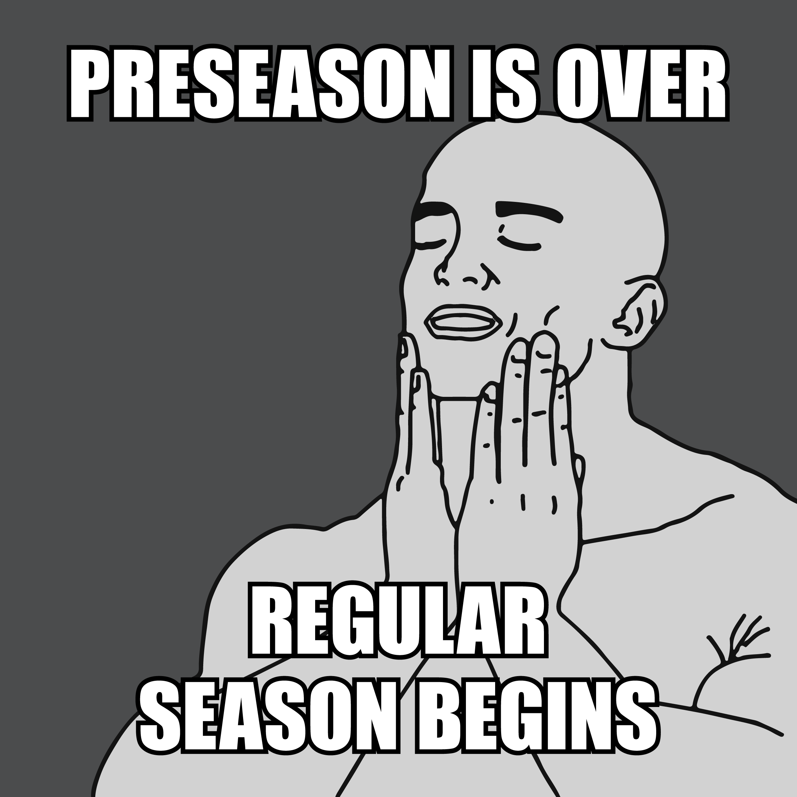
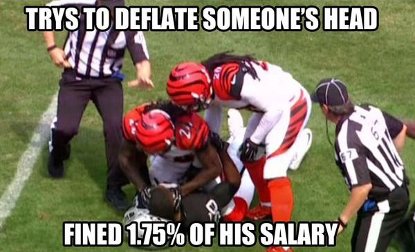
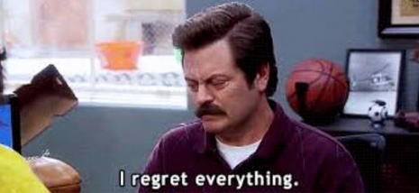
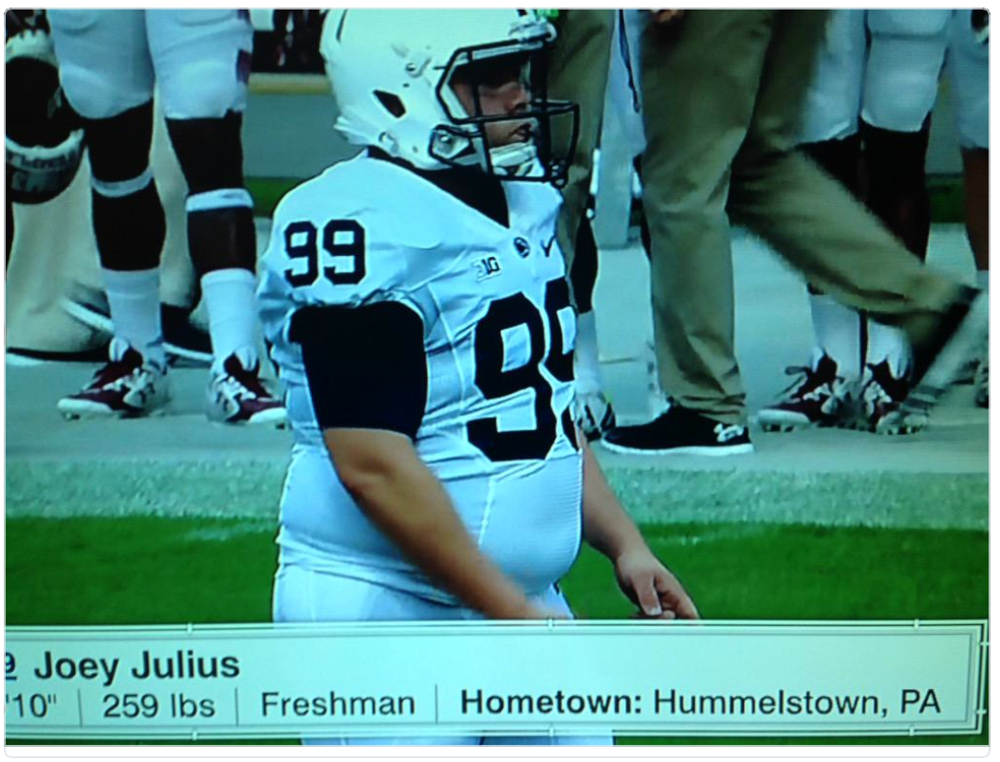
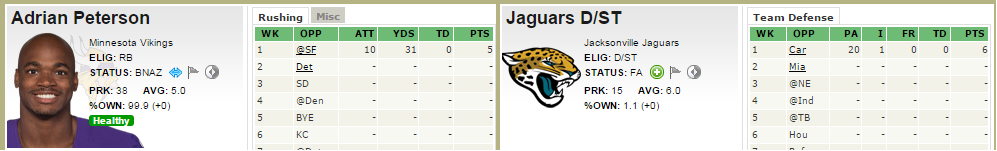
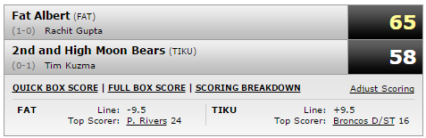

Al Davis RIP Fantasy Football
The official site for all things ADRIP
Week 1: In-Review
"God bless Fantasy Football. There are many things a man can do with his time - this is better than those things."

It's been a long time coming, but after a sometimes seemingly endless wait, the 2015 NFL season has finally begun. If you were like me, your life finally had purpose again. Food once again had a taste, colors began to shine more vividly, and your time spent on ESPN greatly increased.
A lot had changed over the summer. Some big name free agents had swapped teams, namely running backs. While there was little to no hype around the incoming RB class, the top 2 picks in the draft were highly praised QB's (more on them later), and a WR class with increasingly high expectations after the rookie breakouts from the 2014 season.
Other intresting news included, the Jets were once again searching for a quarterback.

The once hottest name in the NFL was learning how to take a back seat to...err...Kirk Cousins ?

Which just further cements why Skip Bayless is an idiot, and his opinions are utter garbage.
I'll say it AGAIN: Give me RG3 over Luck - any day, any night, any year,
any career.
— Skip Bayless (@RealSkipBayless) October 15, 2012
Some players took the offseason to hone their craft. In an exclusive interview I'm going to pretend I had with JPP, he was quoted as saying
My focus this summer is to work on becoming more explosive.
I think it's safe to say he achieved that goal with flying colors... (is that too many metaphors?)
{kind=link}

The Tampa Bay Buccaneers finally saw their luck change, and were able to secure the #1 overall pick in the draft. With a newly re-inspired fanbase, the organization saw this as a great opportunity to rebrand themselves, and start anew by releasing a new team logo.

However, with all the things that changing around the league, it was good to find some stability. Something all fans could count on for the comming season; and that was the consistency of Tim Tebow's 53-man roster spot.

In fact, possibly the only bigger guarantee we know we can count on, is the fact that the NFL (as an organization) is to be taken seriously. Particularly when it comes to matters of personal conduct both on and off the field. Players have to remain in line, and represent the shield with pride. The NFL is increasingly staunch on this position, and have a zero tolerance policy against those who think otherwise. This never has been more clear than perhaps this offseason, as we saw big name players, with heavy fines. I think we can all agree, the severity of each was fair, and quite applicable to the crime. (additionally, see Stallworth, Donte, who apparently works for the Washington Post now).

Oh, and don't worry, it's carried over into this season already as well.
Hardy, would choose not to appeal his suspension (chances of injury are much less on vacation, especially in a contract year), however, Brady and the Patriots went quite an opposite route, and that ended up being all that was talked about for nearly the entire summer.
So, despite all the happenings this summer, those discussed above as well as;the entire 49ers defense retiring, Mariota going #2 in the draft, etc.; the entire offseason was essentially consumed with one topic...Deflategate. All of that ended when Judge Berman decided to throw out the suspension on grounds of a lack of fair due process for Brady. This caused a very clear rift, which forced all fans of football alike, to really look within themselves, and determine "Where do I side on such an important, and sensitive issue as deflated balls."

With Brady once again free, Roger was left to contemplate and reflect on this entire circus show. Again, he was once again reminded that while being the most hated commisioner in professional sports, he is also a joke when it comes to handing down punishments.

All that being said, that meant Brady was on the field for week 1, and it seemed clear, he had every intention of rubbing that fact in Goodell's face
The stage was set for Thursday night, Steelers vs. Patriots, a battle of offensive juggernauts. The Steelers knew they were going to have their work cut out for them on defense, but Mike Tomlin had come up with what seemed to be a bulletproof strategy:
We're going to leave Gronk wide open the entire game, and force him to beat us. We don't even think Brady will see him out there.
Some critics who aren't as in tune with the chess match that is professional football, questioned the tactics.

We all know though, that the proof is in the pudding. Surely, the critics would be silenced as the Steelers boarded their bus home Thursday night, with a victory in hand, and a particularly sly grin across Tomlin's face.
The game started, and true to his word, Tomlin deployed the questionable tactic several times throughout the course of the game. Each time, with equaled success.


Much to the surprise of experts everywhere, the tactic did not pay off. The issue seemed to be two fold.
- Through some form of witchcraft and wizardry, Brady was in fact able to locate Gronk on the field.
- The Steelers had mistakenly put in the highschool sub package, resulting in Gronk being roughly 2 feet taller than the tallest defender.
He was truly a man amongst boys, and all told, it amounted to an impressive start to the season for Gronkowski (5 Receptions/94 Yards/3 TDs), for a whopping 27 fantasy points.
The Steelers made the game look close on a late TD pass to Antonio Brown (which apparently had a $100 Million gambling impact), but make no mistake, had there been more than 1 second left on the clock, Gronk would have likely ended the night with 4 TD's.
The only other real take away from that game, was the fact that Antonio Brown looks like a LEGO head.

Then came Sunday. I mean, how great was it to wake up Sunday morning, and know there was a full slate of NFL games to watch? The first week to see your team in action. The ups, the downs, the roller coaster that is fantasy football. The misery, the jubilation, the down right awesomeness. A full day, jam packed, from sunup to sundown, of fantasy glory.
Among a few of the notable moments, Aaron Rodgers reunited with James Jones , seemingly forgot that he'd lost Jordy Nelson for the season. While Jones rode the bench to an impressive 2 TD day in his debut, Rogers spent every spare moment he wasn't throwing a touchdown, to ensure he could get any competitive advantage possible.

In other news, who the heck approved this asleep and/or drugged out mugshot for Dan Bailey ?

For many of us, though we care little for the Titans or Bucs, we did want to see Mariota succeed, and in particular, against Winston . Both QB's started out very strong. Marcus kicked things off by throwing his first NFL TD pass to Kendall Wright . Not to be outdone, in the anything you can do, I can do better vein of things; on the subsequent drive, Winston proved he could do the same...and also through his first NFL TD to a Titans player.
Marcus would end up sitting out the majority of the second half, as he steamrolled his way to an impressive victory, and notched the second highest fantasy point total of the week, just behind Tom Brady with 32 and 35 points respectfully.
Meanwhile Bucs fans everywhere were like:
In addition to watching Mariota tear up the Bucs, all the Oregon fans out there will likely have fond memories of watching Chip and the Ducks over the years, with their creative playcards each week, and small army of play callers on the sideline. With the effectiveness of this system at Oregon, it was no real surprise he continued to employ the same system when he brought the blur to the NFL.
/cdn0.vox-cdn.com/uploads/chorus_asset/file/2446226/signals.0.gif)
While most consider his system quite ingenious (ESPN even took at shot at trying to crack it back in 2011):
ESPN tapped Mark Kozek, a math professor at Whittier College in California and code-cracking buff who used to play football, along with a team of photographers who kept their lenses trained on Oregon's sideline for two road games, in an attempt to unravel Kelly's code before the Ducks' 2011 BCS national championship game against Auburn.
They failed.
Despite the creativity and imagination, it still requires proper execution by the players on the field. And as such, not every play can be guaranteed to work perfectly. Unfortunately for him, the blowjob monkey, ultimately was one of those plays.
Kiko Alonso made his Eagles debut in the same game, and attempted to do his best ODB impression, he used a couple extra fingers, but seeing as he wasn't the targeted receiver, I think we can let it slide.
There were several other Madden-esque plays during week one. None probably any greather than when Carlos Hyde hit the button.
Part of the reason I believe the 49ers weren't too worried about losing half of their starting defense this offseason, is because of their stable of undercover players, who lie in the weeds, waiting to be triggered into action at a moments notice.

I think everyone was excited to see AP come back, unfortunately he had a very lackluster return. As Skyler put it:
Alot of things have changed this year, but the vikings still suck.
Some jokes will just never die (and for good reason). DIgging back into the archives, I found some very early footage of a young Mark Sanchez honing his craft in the backyard with his father. Though he may be older now, you will notice a very similar technique/playstyle to what we've been accustomed to seeing in the NFL of late.

And I know I'm going to regret giving out this info, but if you're doing your homework, and getting your sleeper list ready for the 2018 season like you should be, keep an eye out for this beast. More loving known as, "The Big Toe", although, with a real name like Joey Julius, who needs a nickname?
On to the actual fantasy games for the week.
Fantasy Recap
It was already noted that the TuribleBurittos made a bad call, and despite their better judgement, left James Jones on the bench for what turned out to be a very solid fantasy outting at 17 points. Good enough for the 4th best performance at the WR position last week. However it had no bearing on the game, as the Stud Muffins shit the bed pretty hard (and by s.t.b. I mean, would have beaten 6 other teams in the league this week with their point total).
The teams that were meant to win really did this week. In fact, there was only one team that lost, had enough points on their bench, that had they made the right calls, could have changed a loss into a victory. That would be the Moon Bears, who scooped up a fat goosegg from DeSean Jackson, and a mere 5 points from Forsett, while 19 points lingered on his bench in Sproles and Garcon. In turn however, Fatty Albert could have swapped in Bishop Sankey who scored 20 points...wait, wow, that's correct, 20 points! So either way it didn't matter much for him.
Speaking of how odd this week was, TE's went absolutely bananas:
Number of TE's that scored 20+ points.
Number of TE's that scored 10+ points.
Number of those TE's that were actually rostered.
By contrast, only two WR's broke 20+ points last week.
You could argue that with the exception of Aaron Rodgers, not another single 1st round draft pick really gave a good return on investment as he was the only one to finish in the top 12 players in scoring last week. Of all the 1st rounders, AP fared only slightly better than Le'Veon Bell, who didn't even play. For a comparison, he scored as many points as the Jaguars Defense...
The most pathetic showing of the week...by far...was the matchup of Fat Albert v. Moon Bears. Combined, they scored 123 points, which means, Where Who could have beaten their combined score, single handedly.
LeSean McCoy